2. CHAPTER 2 - GUIDELINES
2.1. Guidelines and Getting Started - Channels in the Urban Environment
2.1.1. Overview
When getting started on a new FLO-2D project, initially create an overland flow model with an inflow and outflow node. If necessary, create fake inflow hydrograph(s) and let the water run all over the grid system (Figure 26). This will indicate the potential area of inundation. Following this preliminary simulation, the details can be added to create an urban model. Starting simple and gradually building a project will avoid many component conflicts. Constructing a complex project with many details before the preliminary simulation is highly discouraged. A suggested order of component development is:
Finalize the inflow hydrology – perhaps add return period inflow hydrographs where appropriate.
Add the rain and infiltration. This will complete the total source volume.
Turn off the rainfall and infiltration and test the remaining components using temporary inflow hydrographs as needed to test specific components.
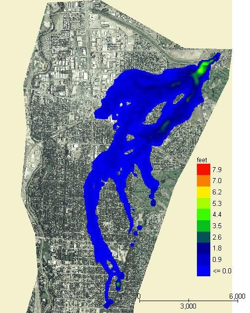
Add mainstem channels in segments.
Add tributary channels as separate segments.
Add channel hydraulic structures.
Add other urban components in no specific order…streets, buildings – ARF values, levees, etc.
Add the storm drain.
Other details: Sediment transport, groundwater, mudflows, etc.
Figure 26. Start a Project with a Grid System and an Inflow Hydrograph Only.
2.2. Cutting channel cross sections from DTM data
Cutting cross sections requires several GIS source files including high resolution elevation data, polyline shapefiles of the banks, and cross sections. It may also be necessary to refine the elevation data using breaklines to help define the thalweg and banks. Elevation data should be in the form of a TIN or high-resolution raster to help facilitate editing the data. When cutting the profile of a cross section, the station elevation orientation should be from left to right looking down stream. QGIS and the FLO-2D plugin is the most efficient tool to cut cross section data. Tutorials and instructions can be found online at https://documentation.flo-2d.com.
Cutting cross sections from elevation data can have problems that should be addressed before finalizing the cross section data base. Regardless of the level of accuracy, an elevation dataset will have some overlap in the channel beds and banks and the profile cutting tools from different software will give different results. Cutting cross sections from different elevation data files may give different results. Cutting the profile in slightly different places will also give different results. The elevation data is only valid as of the day it is flown. As the dataset ages, the actual channel geometry evolves with flow. Some of the issues are:
What was the original channel morphology and how much has it changed?
What is the channel base flow?
How does the base flow change in the downstream direction?
What will be the bed form at high flows?
These questions can usually be answered during a site visit. Look at the overall picture including the channel geometry, makeup of the bed material, any obstructions and how the channel evolves in the downstream direction. Take pictures and notes to help understand what the channel system is trying to do. Determine the slope of the channel and estimate a trapezoidal or rectangular area. Do a calculation to estimate a bank full discharge. If the cut cross sections cannot contain that discharge, they need to be reviewed. Go over photographs of the channel, review the aerials and review the elevation data. This process will probably reveal reasons for discrepancies in capacity.
2.2.1. Working with channel cross section data
Some of the issues associated with channel geometry data are discussed in this section. The best approach for working with cross section data is to review each channel element cross section plot and the corresponding flow area, top width and wetted perimeter in the PROFILES program to identify any radical variations in the geometry on a channel element basis.
Flow area variation
Cross sections can have a similar appearance but have a completely different geometry (Figure 27). In this figure, two cross sections are contiguous but only one controls the flow. One cross section has a bank full flow area of 33 ft2 and the second one has 139 ft2. It is necessary to review the data source for each cross section to ensure they represent the physical configuration.

Figure 27. Cross Section Comparison.
Braided channels
Braided channels can be poorly represented by cut cross sections. The top of banks may be obscured with a cut cross section showing multiple high points that could be the active channel (Figure 28). The braided channel may also be reworked by recent flooding creating wide variation in flow areas. Typically, the braided channel will convey a 2-year to 5-year return period flood within its banks. The channel may increase its bankfull capacity during the flood event. If the cut cross section cannot be accurately delineated with aerial photos or field observations, the channel cross section shape may have to be estimated or small grid elements can replace the 1-D channel.

Figure 28. Braided Channel Cross Section.
Braided channels are difficult to model for split flow conditions and the channel can rework itself during flood events. Sediment deposition and slope variation can produce temporally variable channel geometry. Figure 29 and Figure 30 show the area where the cross section in Figure 28 was cut. The channel geometry and shape for these two dates varies significantly. Typically the braided channel will convey a 2-year to 5-year return period flood within its banks because it has a highly mobile bed. The channel will increase its bankfull capacity during the flood event. If the cut cross section cannot be accurately delineated with aerial photos or field observations, the channel cross section shape may have to be estimated.

Figure 29. Braided Channel 2012. (Source Google Earth)*

Figure 30. Braided Channel 2014. (Source: Google Earth)
Undefined banks
Another common problem with cut cross sections is that the bank definition is not captured. This can occur if the channel width is too narrow or if the elevation data has insufficient resolution. Figure 31 right bank is not captured. This is probably because the cross section was not long enough or the elevation data didn’t have enough resolution along the right bank. This is one of the most common errors of cut cross sections.

Figure 31. Cross Section Missing Right Bank.
Split flows and Islands
Islands are typically higher than one or both banks due to sediment deposition. Figure 32 shows that the secondary channel on the right has a lower right bank elevation than the top of the island and consequently, the top of the island is presumed to be the right bank for the entire cross section. For some islands, splitting the river into two channels with a confluence may be more expedient. The other approach is to lower the island below the right bank.

Figure 32. Split Flows.
Under water
LiDAR and IFSAR data does not penetrate water surfaces, the bottom of the channel is modeled as a line, lacking sufficient detail below water line (Figure 33). Bathometric data is needed to fully define the cross section geometry. It may be necessary to estimate the missing wet channel reach conveyance in the thalweg if a portion of the channel has a dry thalweg.
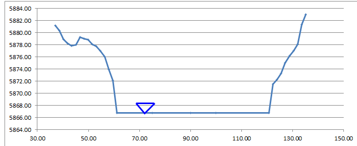Figure 33. Water Surface.
Urban channels
Urban trapezoidal and rectangular concrete channels are often modelled as natural channels with station-elevation with only a minimum number of stations. In the red points represent the station and elevation pairs listed in the XSEC.DAT for this cross section. Four station points are insufficient to define the rating table for the natural cross section geometry. It is more appropriate to model urban design channels with the Rectangular or Trapezoidal method.

Figure 34. Urban Design Channel.
If modeling a rectangular or trapezoidal channel with station elevation data, it’s best to fill in the points at regular intervals. Use 10 or more station/elevation points (Figure 35). This will ensure the model creates the proper flow area rating tables and that the Profiles program correctly interpolates the thalweg and channel shape.
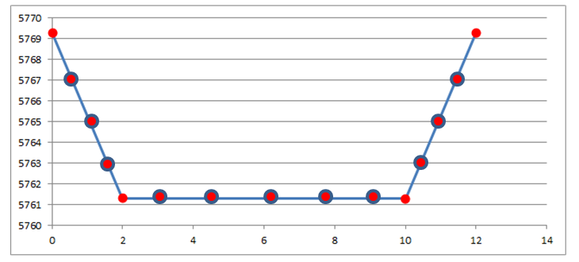Figure 35. Urban Design Channel Corrected.
Bridge and Culvert Cross Section Transitions
Hydraulic structures can be integrated with any channel geometry. If a hydraulic structure is causing numerical instability, first review the upstream channel geometry. As the channel approaches the bridge or culvert, it is important to capture the transition in the geometry from a cross section upstream of the backwater effects to the hydraulic opening. Ideally this transition would occur over several channel elements either with flow expansion or inlet narrowing. In Figure 24 below, the channel cross section at the bridge/culvert is only slightly larger (with flared wing walls) than the upstream trapezoidal cross section. With 15 ft grid elements, the cross section area transition should occur over 4 or 5 channel elements with a slightly increasing n-values from 0.02 representing the upstream channel to 0.03 or so at the bridge piers. There is also a storm drain outlet near the bridge entrance as identified by the sediment bar deposit. During flooding, the flow streamlines would be distorted by the outlet discharge and the squeezed channel flow would experience higher flow resistance (higher n-values).

Figure 36. Urban Concrete-Lined Trapezoidal Channel Transition
2.2.2. Confluences
Channel routing is established by assigning channel connections at model runtime. Each channel connection is identified when the CHAN.DAT file is read. Confluences or split flows, where a given channel element has three or more connections (i.e. upstream, downstream and split/confluence), must be assigned by adding a line C at the end of the CHAN.DAT file. The format is:
C 4507 4559
The tributary should be listed first (4507) and the main channel second (4559). Each tributary or split flow channel element will have a unique line C. If there is only one tributary confluence, there is only one line C. The channel confluence guidelines are as follows:
The tributary or split flow channel segment should not include the main channel confluence channel element. A channel element should only be listed once in the CHAN.DAT file. In Figure 37, the red arrows indicate the incorrect method.
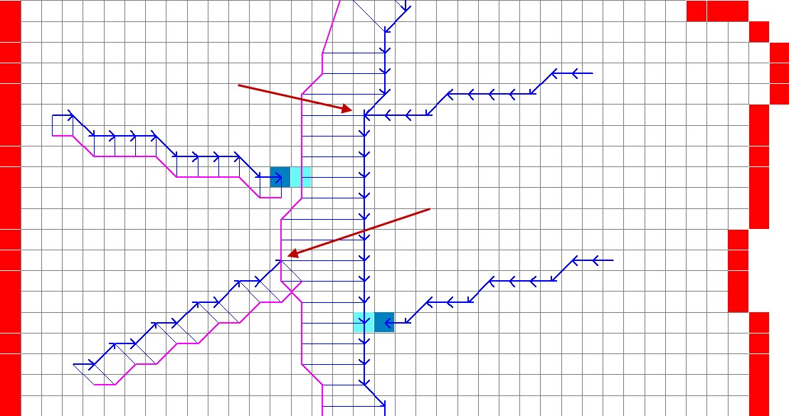Figure 37. Tributary Element in a Main Channel Bank.
The last tributary channel element before the confluence should be the last channel element listed for that tributary channel segment (Figure 38 – green arrows indicate correct method). Dark blue element is the Tributary Confluence Node and the light cyan element is the Main Channel Node.

Figure 38. Tributary Channel Ends Adjacent to Main Channel Bank.
The first split channel element after the confluence should be the first channel element listed for that channel segment. In this case it was also necessary to “Add the Confluence Pair” (Figure 39).

Figure 39. Split Flow Condition.
The tributary or split flow element must be contiguous the main channel. It cannot be separated by one or more floodplain elements from the main channel. The red circle in Figure 40 shows this incorrect configuration.

Figure 40. Tributary Channel Element not Contiguous to Main Channel.
The tributary element can be contiguous to either a left or right bank main channel element. If the tributary joins the main channel right bank element, Line C in CHAN.DAT should list the tributary/split channel element and the main channel right bank element (respectively). The FLO-2D model will find the left bank channel element at model runtime (Figure 38).
The user assigns the channel confluence in a dialog box that lists tributary/split channel element in a data entry field column and the main channel element in a second data entry field column. The dialog box is activated by a channel confluence command under the ‘Tools’ pull down menu shown in Figure 41. The data entry will list all the potential channel confluences and split flow locations. The channel confluences/split flows elements can be added, edited or deleted. When the User clicks on any pair in the Dialog box, the corresponding elements will be highlighted momentarily on the GDS screen. This helps the user identify which element pairs to select.

Figure 41. Confluence dialog boxes.
The following are guidelines to avoid having numerical stability issues at the confluence. Use the PROFILE program when reviewing the confluence channel element geometry.
The channel bed elevations for the tributary and main channel upstream of the confluence should have the same approximate slope.
The tributary flow area for the last channel element or two upstream of the confluence can be increased to reduce observed numerical instability.
The roughness values for the tributary and main channel upstream and downstream of the confluence should be increased to reflect the highly turbulent flow constriction.
2.2.3. Channel Infiltration
Although channel bed and bank seepage is usually only a minor portion of the total infiltration losses in the system, it can affect the floodwave progression in a long ephemeral channel. The surface area of a natural channel is used to approximate the wetted perimeter to compute the infiltration volume. The hydraulic conductivity in the Green-Ampt equation is the only parameter required for channel infiltration, which can be simulated on a segment or reach basis. A temporal variation in the channel seepage loss can be computed with a decay function using the initial and final hydraulic conductivity and the infiltration storage soil depth. Channel infiltration loss is a detail that is usually ignored for short duration flood events less than 100 hrs in an urban environment. It generally has limited impact on the floodwave in a short channel for a short duration. Highly porous, semi-arid channels may have high infiltration that may require calibration in order to match stream gage records. Infiltration will not be a cause of volume conservation error or instability in the channel.
2.2.4. Levees and Channels
Levees can be assigned along channels without issues (Figure 42). In urban areas, levees may also represent fences, berms, or flood walls that are assigned with shapefiles. When constructing the levee component it is only necessary to avoid drawing the levees into the interior channel. There is an automated error message at runtime to alert the user to this condition.

Figure 42. Levees and River Channel Configuration.
Channel routing instability or volume conservation errors may occur when levees fail or are overtopped. These modeling issues are channel flood routing problems, not levee and channel conflicts. Water stored behind levees can created ponding flow conditions (Figure 43). Ponded water is not an open channel flow condition and must be assigned a reasonable n-value for deep, still water (see Ponded Water Guidelines document).
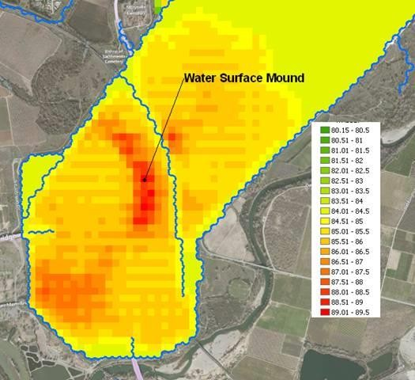Figure 43. Ponded Area Behind Rivers Levees from a Levee Breach Upstream.
2.2.5. Hydraulic Structures
Channels and hydraulic structures can be used to simulate a variety of features. Hydraulic structures can interact with the channel in three ways:
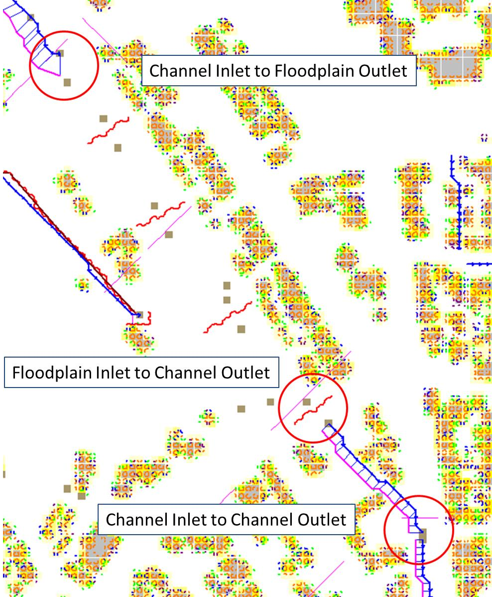
channel to channel
floodplain to channel
channel to floodplain
Figure 44. Channel Structure Configurations
Figure 44 shows examples of the three configurations. Flow in the figure is north to south. Red circles show the three configurations from top to bottom. The hydraulic structure can be any feature that controls the water surface and discharge such as bridges, culverts, weirs or pumps. Discharge through the hydraulic structure is based on rating curves or rating tables or if the structure represents a culvert, generalized culvert equations for inlet and outlet control can be applied. There is also a bridge routine option that computes the discharge through the bridge based on the physical features of the bridge. The principal hydraulic structure interaction with a channel is to slow down the velocity and backwater effects when the rating curve or table predicts less discharge than the upstream normal flow depth condition. Refer to the Data Input Manual or the White Paper “Hydraulic Structure Guidelines” for a more complete discussion of hydraulic structures in the FLO-2D model.
Hydraulic Structure Rating Curves and Tables
The hydraulic structure stage-discharge relationship can be assigned as either a rating curve or rating table that is based on the headwater depth above the channel thalweg (assumed to be the hydraulic structure invert elevation) unless a headwater reference elevation is specified. A discharge rating curve uses headwater depth to calculate discharge:
where
a = coefficient,
b = exponent
A broadcrested weir (Figure 45) discharge curve is an example of a rating curve:
where C = 2.65 - 3.40 in English Units,

Figure 45. Broadcrested Weir Definition.
More than one rating curve relationship can be used to simulate blockage, or changes in inlet or outlet control. The primary hydraulic structure interaction with the channels is backwater effects when the rating curve or table predicts less discharge than the upstream normal flow depth condition.
Several important features of hydraulic structures are:
If rating curve or table computes an outflow discharge that is less than inflow to the inlet element, backwater will occur whether the flow is inlet or outlet controlled.
Using the rating table is more reliable and accurate than a rating curve.
Flow through a long culvert can be simulated with a rating curve or table using the culvert length. Culvert routing (Muskingum volume routing method) is appropriate for culverts 500 ft or longer.
Flow upstream thru the hydraulic structure can occur with the INOUTCONT parameter.
Hydraulic structure inlet and outlet channel elements don’t have to be contiguous (Figure 46)

Figure 46. Hydraulic Structure (Culvert) Connecting Two Channel Elements.
If a structure spans more than one channel element in a channel segment as shown in Figure 46 above, split the channel into two segments and assign the inlet node at the end of the first segment and the outlet node at the start of the second segment.
The hydraulic structure rating table or curve can be created from:
HEC-RAS, HY-8 or another suitable program. Always check with the regulating agency to determine what software will be accepted.
Two cross sections upstream and two downstream of a bridge are be used to generate a rating table with HEC-RAS.
Culvert tables or programs
Weir and spillway equations
Generalized Culvert Equations
Culvert flow can be simulated using generalized culvert equations to predict culvert discharge for circular or rectangular box culvert under inlet or outlet control. These equations are based on the U.S. Dept. of Transportation Highway Manual (2005) and the culvert data is entered with the hydraulic structure data in HYSTRUC.DAT (Figure 47).

Figure 47. Select the Hydraulic Structures Dialog Box.
The data requirements for the generalized culvert equations include:
Length
Diameter
Rectangular Width
Type – Box or Pipe
Entrance Type (3)
Entrance Loss Coefficient
Roughness
Multiple Barrels
All the possible flow scenarios involving inlet and outlet control are analyzed internally by the generalized culvert equations, based on tailwater elevation, friction losses, slope, and entrance control and headwater elevation.
Bridge Hydraulics Component
The FLO-2D bridge routine enables the user to compute the discharge through bridges without using an external program to generate a stage-discharge rating curve or table. This routine will compute the discharge for three classes of flow regime, free surface flow for discharge below the bridge low chord, pressure flow when the discharge is above the low chord but below the bridge deck and combined pressure and weir flow as the discharge goes over the bridge. The pressure flow and weir flow computations are relatively straight forward. The free surface flow is more complex with a number of multiplicative coefficients that represent various features of the bridge and their effects on the flow.
The pressure flow will be either sluice gate flow or orifice flow, whichever is smaller. The user has complete control of all the coefficients utilized in the bridge routine for all flow regimes.
The objective of the bridge routine is to compute the discharge through the bridge based on the physical configuration of the bridge (Figure 48). The bridge discharge is shared between two grid elements (channel or floodplain) that do not have to be contiguous and whose flow hydraulics (depth and water surface) are computed by the FLO-2D routing algorithm. Bridge discharge is defined by 1-D flow in the cross sections upstream and through the bridge. The focus of the bridge routine is to relate the bridge discharge to the flow volume in the upstream and downstream channel elements. A primary focus of the bridge routine application should be to achieve numerical stability for the bridge flow over a wide range of unsteady, non- uniform channel discharges. Detailed discussion of the bridge routine is presented in the White Paper entitled “Bridge Hydraulics Component” along with a companion paper “Bridge Component HEC-RAS Comparison.”

Figure 48. FLO-2D Bridge Component
Tailwater Conditions
As the tailwater increases in relation to the headwater, backwater or submergence may ensue and eventually flow may go upstream through a hydraulic structure (Figure 49).
The effects of the relationship between the structure headwater and tailwater is controlled by the INOUTCONT parameter (0, 1, or 2) in the HYSTRUC.DAT file (Table 1). If INOUTCONT =2,
Table 1. Hydraulic Structure Rating Table Options.
Control |
Control Details |
INOUTCONT = 0 |
Simulates downstream flow through a structure or pump flow where the discharge is solely a function of the headwater depth Hw. |
INOUTCONT = 1 |
Adjusts the rating table with a submergence factor as the tailwater approaches the headwater. As tailwater water surface approaches the upstream headwater surface elevation. No upstream flow through the structure is permitted. The potential submergence is given by Q = Q * SUBFACTOR; where SUBFACTOR is computed by the model based on HY-8 submergence| criteria as defined by (initially the SUBFACTOR = 1.0) IF DELTA > 0.975, SUBFACTOR = SUBFACTOR – 0.01 IF DELTA < 0.975, SUBFACTOR = SUBFACTOR + 0.015 IF DELTA > 1, SUBFACTOR = SUBFACTOR - 0.01* DELTA |
INOUTCONT = 2 |
Upstream flow through the structure is computed with the rating table adjustment when the tailwater surface exceeds the headwater surface. The headwater depth Hw and tailwater Tw can switch with submergence to allow flow to go upstream. For upstream discharge through| the bridge or culvert, the outflow node must have upstream flow into it from the downstream channel element. |
INOUTCONT = 1, 2 |
For bridges joining contiguous grid elements, the rating table is turned off for flow depths less than one foot or when the SUBFACTOR is less than 0.02. This would occur for inflow and outflow WSEL that are nearly equilibrated. |
headwater depth Hw and tailwater Tw can switch with submergence to allow flow to go upstream.

Figure 49. Variable Culvert Tailwater Condition
Channel Hydraulic Structure Troubleshooting
Hydraulic structures can be a primary source of numerical instability in the channel when the rating curve or table does not match the upstream flow very well. This is common for low flow conditions. While FLO-2D can accurately replicate backwater effects, accelerating flow through a hydraulic structure will typically only occur with a concrete apron structure. A rating curve or table that accelerates the flow through the bridge or culvert will pull down the water surface elevation in the inlet node. This will cause surging as the headwater drops until the discharge is low enough to replenish the volume in the inlet node starting the surge cycle again.
The hydraulic structures that have the following flood routing issues will result in Warning Messages written to the ERROR.CHK file:
Adverse slope between the inflow and outflow nodes;
Inflow or outflow cells that also contain levee, streets or ARF’s;
Rating table data where the first pair of stage-discharge values are non-zero (must be 0.0.);
The rate of increase in the rating table values is unreasonably high.
Error Messages are written to the ERROR.CHK file for the following channel conditions:
Reference elevation is lower than the inlet or outlet grid elevations.
Inflow or outflow nodes are also assigned as channel elements.
Assignment of a channel element to more than one hydraulic structure inlet node.
Rating table must have increasing stage and Q.
The most frequent problem with application of the hydraulic structure routine is a mismatched flow condition. This occurs when the discharge through the structure defined by the rating curve or table is greater than the upstream inflow to the structure. This condition distorts the upstream water surface primarily by accelerating flow through the structure and pulling down the inlet headwater. If the hydraulic structure debouches water into the channel from a tributary or floodplain node, surging flow could occur with a high rate of change in the discharge. Review the HYDROSTRUCT.OUT and HYCHAN.OUT files for surging. If surging is noted in the hydraulic structure hydrograph or the channel hydrographs near the inlet, the rating table or curve will need adjustment. The following conditions should be reviewed:
Shallow flows less than 1 ft in depth with velocity > 5 fps. Warning message
Downstream WSEL > upstream WSEL with INOUTCONT < 2 (potential upstream flow thru the structure). Warning message.
Rating table adjusted with SUBFACTOR. Warning message and revised table values are written to REVISED_RATING_TABLE.OUT file.
Hydraulic Structure – Channel Instability Adjustments
Hydraulic structures create an artificial control on the water surface elevation. This may cause a mismatch of the stage (depth) and discharge over a range of flows resulting in surging upstream or downstream of the structure. Numerical instability can result in volume conservation problems, discharge surging and slow simulation times. Most of the following hydraulic structure modeling problems and data issues are automatically checked at model runtime and are listed in the ERROR.CHK at the termination of a simulation. At the outset, it might be expedient to run the model for a very short simulation time (SIMUL = 0.01 hr, TOUT = 0.01 hr) and review the ERROR.CHK file. This will allow the user to address any significant issues before proceeding with model development.
Virtually all the hydraulic structure runtime problems stem from a poor match of the rating table with the upstream flow conditions. This is primarily due to the underestimated structure roughness when developing the rating table with an external software such as HEC-RAS. These external programs have a presumption of steady flow, uniform flow applying a single n-value for the entire reach. The nvalues may be selected from a reference handbook that shows channel images with n-values calibrated for normal depth that are typically lower than routing model n-values with both spatial and temporal (flow depth) variability
Most hydraulic structures represent a hydraulic control. The flow is constricted through the structure, or the entrance effects are less efficient than the upstream normal flow. The flow decelerates
through the structure and creates a backwater effect. This generally occurs over the entire range of flow to bankfull discharge. It is rare when a structure accelerates flow, but some steep box culverts or bridges with concrete aprons may result in higher velocities than those approaching the structure. The concrete lined channel through the bridge/culvert may also have a steeper slope than the upstream reach.
In most cases, a rating table that accelerates flow through the structure is the result of low roughness or friction factors assigned to generate the table, lack of entrance coefficients, or inappropriate slope. When a rate table accelerates flow through hydraulic structure in the model, it pulls down the inflow node water surface and conversely increases the outflow node storage. This changes the relationship between the headwater and tailwater resulting in numerical surging (Figure 50).

Figure 50. Hydraulic Structure Numerical Surging.
A poor rating table can be generated when the user is primarily interested in the 100-year flood and neglects to assign sufficient detail to the lower portion of the rating table. In the following Table 2, the user may be interested in discharges over 20,000 cfs, but what is the discharge at one foot?
Table 2. Stage Discharge Relationship for a Bridge

The interpolated discharge at 1 ft in the above table is about 1,000 cfs. In almost any natural river channel, it is impossible to have discharge of 1,000 cfs with a depth of 1 ft above the thalweg. The flow velocity would be on the order of 1 to 2 fps which would mean that the channel width would have to be 500 to 1,000 ft wide with a uniform depth of 1 ft.
The issue is that there is a linear interpolation between the stage-discharge pairs in the rating table and the actual rating table is distinctly non- linear. It is more reasonable for the discharge to be on the order of 100 cfs at one ft deep. The bridge in Figure 51 was assigned the rating table below (Table 4).
Figure 51. Bridge/Culvert and Concrete-Lined Trapezoidal Channel.
The discharge from Table 3 is approximately 100 cfs for a depth of about 1 ft (0.9 ft).
Table 3. Rating Table for the Bridge/Culvert

From the HYCHAN.OUT file the discharge several hundred feet upstream of the bridge is only 37 cfs at approximately one ft (Table 4). For 37 cfs discharge coming down the channel, the rating table (Table 4) has a corresponding depth of only about 0.45 ft, thus the bridge/culvert will numerically pull the water surface down as the flow enters the structure. The result is the numerical surging displayed in the plotted hydrograph of flow through the bridge (Figure 52).
Table 4. Channel Hydraulics Upstream of Bridge Reported by HYCHAN.OUT
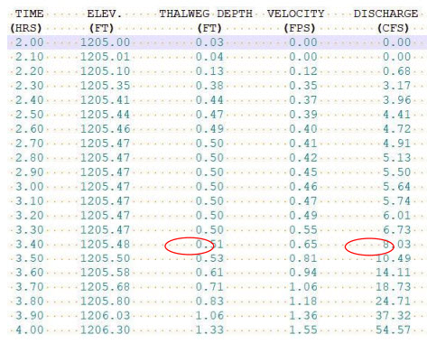
Figure 52. Box Culvert Hydrograph Numerical Surging.
It is possible that for a concrete lined structure or culvert with a slope steeper than the upstream channel that physical surging could occur. Typically, this is demonstrated by smooth peaks and troughs (not spikes as shown in Figure 52) and maybe be limited to a specific range of flow depths until the backwater effects of the constriction take over. In this case, it is not necessary to eliminate the instability, but perhaps it can be reduced or further smoothed out.
To reduce or eliminate channel numerical surging with a hydraulic structure, the following steps are suggested:
Provide more definition to the rating table at low flows;
Regenerate the rating curves in the external program with more realistic n-values used in the FLO-2D channel;
Review and adjust the slope through the structure;
Gradually increase the channel n-values upstream and downstream of the bridge/culvert;
Review and adjust the channel flow area transition leading upstream to and away downstream from the bridge;
Use a rating curve instead of the rating table, although, in general, the rating table is more accurate than a rating curve;
Use the FLO-2D bridge flow component that represents the combined bridge features and channel geometry.
2.2.6. Storm Drains
This section is intended to document appropriate methods for integrating storm drain with a 1D channel. Refer to the Storm Drain Manual for complete guidelines for applying the storm drain component. Integrating a storm drain network into an urban model requires an understanding of how the storm drains will interact with the surface flow. In the FLO-2D model, the most complex interaction occurs between the storm drain features and the 1-D channel component. The storm drain system interfaces with channels through inlets and outfalls. An early identification of storm drain database deficiencies can save time and resources on a project.
2.2.6.1. Storm Drain Inlet – Channel Considerations
After initial set up of the urban project, the following issues related to the storm drain inlet to channel system should be addressed:
Inlet locations:
Inlets must be inside the FLO-2D computational domain;
Inlets cannot be assigned to the interior channel elements;
Inlets should not be assigned to the channel bank elements.
Inlet elevations:
Channels discharging to a storm drain inlet should have a thalweg that matches the inlet invert elevation;
In most instances, the inlet should be set up as a vertical inlet in the SWMMFLO.DAT file.
Storm drain inlets should not be assigned to an interior channel element. If a channel discharges directly to a storm drain pipe inlet, similar to a culvert inlet, assign the inlet to the channel left bank element. For this configuration a vertical Type 4 inlet can be applied (refer to the Storm Drain Manual for details). Figure 53 and Figure 54 provide some additional details about setting up the inlet/channel interface. This system shows that the bed elevation of the channel is equal to the invert elevation of the inlet.
Channel Bed Elevation = Bank Elevation – Depth = (299.8 – 3.5) = 296.3 ft
Inlet Elevation = 296.3 ft

Figure 53. Trapezoidal 1-D Channel Discharging to a Storm Drain Inlet.

Figure 54. Elevation of a Trapezoidal 1-D Channel Discharging to a Storm Drain Inlet.
Figure 55 shows another example of a storm drain system interfacing with a channel system. The surface water and the storm drain exchange flow based on the water surface elevation in the channel and the pressure head in the storm drain. The water surface elevation and the pressure head are a function of the following:
Channel thalweg elevation = inlet invert elevation
Channel bank elevation = inlet rim elevation

Figure 55. Complex Interaction between a Storm Drain Pipe and 1-D Channel.
2.2.6.2. Storm Drain Outfall – Channel Considerations
To connect a storm drain outfall to a channel element the following issues should be addressed:
Outfall locations:
Are all outfalls inside the FLO-2D computational domain?
Are there outfalls assigned to the interior channel elements? This is not allowed.
Are outfalls assigned to the appropriate channel bank elements? They should be assigned to the left bank only.
Outfall type:
Are outfalls set up as a FREE condition outfall type in the SWMM.inp file? This is required.
Is the switch to discharge flow back to the surface ‘ON’ in the SWMMOUTF.DAT file?
Figure 56 shows a complex storm drain – channel system where a channel feeds the storm drain as an inlet and flow returns to surface further downstream and back into the channel network.

Figure 56. Complex Flow Exchange between a Storm Drain System and 1-D Channel.
Storm drain outfalls should be assigned to the channel left bank element. For most cases, the outfall invert elevation would be assigned to the channel element thalweg elevation. If the coordinates in the SWMM.inp file are the left bank element channel coordinates then the GDS will automatically assign the outfall node to the left bank element. The user can review that the outfall is correctly paired to the left bank element in the SWMMOUTF.DAT file. Refer to Figure 57 for an example of a storm drain that physically outfalls to the right bank but is extended to the left bank grid for modeling purposes. The user should verify that the final pipe length and invert elevation are correctly assigned to match reality even though the modeling connection does not.
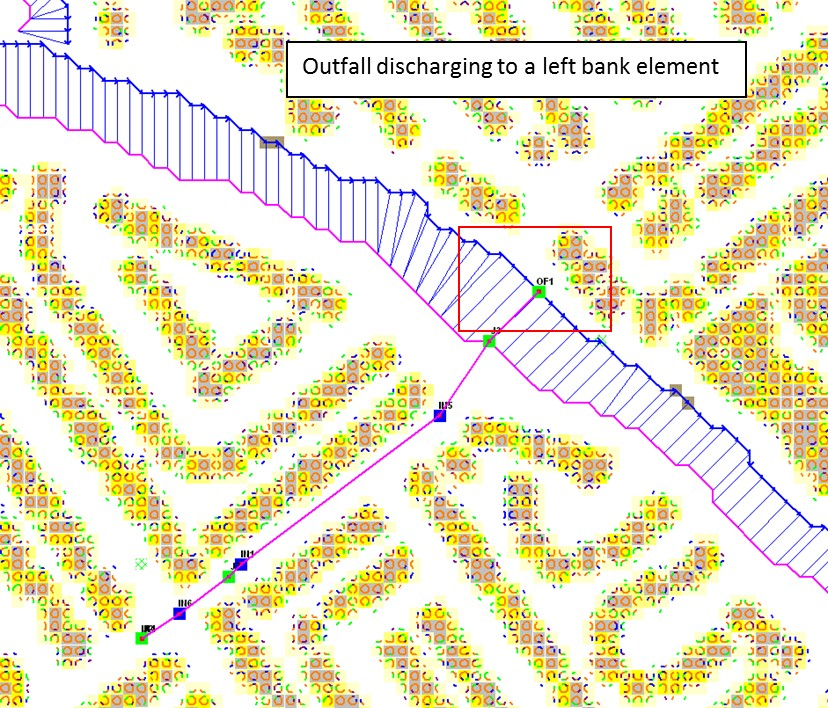Figure 57. Typical Configuration of a Storm Drain Outfall Discharging to a Natural Channel.
The GDS uses coordinates of the different storm drain components from the SWMM.inp file to pair them with the grid elements in the surface layer. It is usually not necessary for the outfall coordinates in the SWMM.inp match the left bank channel element coordinate. The position is within the channel, the outfall will be correlated in the SWMMOUTF.DAT updating the grid element number to the closest left bank element number (Figure 58). The user should check every outfall to be sure it is correctly assigned to the appropriate left bank grid. In this case, the outfall coordinates in the SWMM.inp file do not have to be replaced since the storm drain discharge calculations will not be affected.
The bank elements in FLO-2D act as both floodplain and channel elements in order to facilitate the channel to floodplain exchange. It is not allowed to assign the outfall to the left bank floodplain element. If the outfall physically discharges to the floodplain elevation instead of the channel bed elevation, assign the outfall position to a contiguous element that is not a channel bank element. Assignment of the outfall to a right bank element, or a channel interior element will generate an error message because that configuration is not allowed.

Figure 58. Outfall Nodes Paired to Interior Channel Elements by GDS.
The outfall invert elevation can be less than the channel thalweg elevations. If the outfall invert elevation is lower than the thalweg elevation (underground), then the storm drain would be assumed to be underwater with an initial tailwater depth. The pipe conduit should have a positive slope to the outfall. This configuration may represent the case for a ponded surface water condition that is assigned as a ground elevation because the ponded water will not contribute to downstream flooding. An outfall invert underground (or underwater) is imposed for this condition and an artificial head equal to the ground elevation is assigned to the outfall node for the entire simulation. This artificial head extends a level pool up the pipe, but the volume that goes into the pipe is not considered in the FLO-2D volume conservation accounting because the grid element is initially dry. The artificial volume is accounted for in the storm drain model as backwater. When the model runs, inflow may be added to either the outfall grid element or the upstream storm drain pipe network and the flow can go either in or out of the outfall pipe based on the pressure head (Figure 59). To account for volume conservation, the storm drain outflow that represents inflow volume to a FLO-2D channel is reported in the CHVOLUME.OUT file.
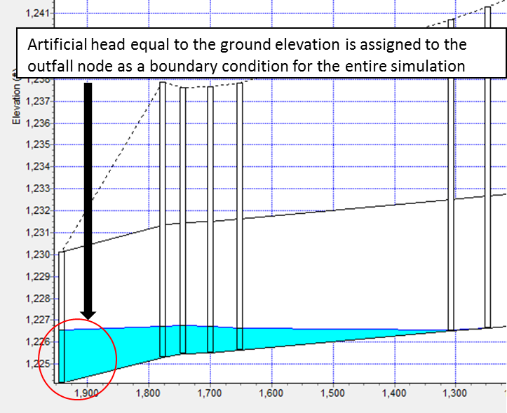Figure 59. Underground Outfall Condition.
Water will flow in or out of the outfall pipe based on the relationship between the water surface elevation and pipe pressure head. Water can enter the storm drain when the external water surface elevation at the outfall is greater than the invert, but it could also evacuate from the storm drain if the hydraulic grade line in the storm drain at the 1st upstream junction is greater than the external water surface elevation at the outfall. This behavior can introduce oscillations in the system that can be explained as a respond to the interaction between external surface water and storm drain pressure (Figure 60).

Figure 60. Head Variations Cause Pipe Discharge Oscillations.
2.2.6.3. Storm Drain Reference Manual
The FLO-2D storm drain manual is a comprehensive set of guidelines for modeling the overall surface to subsurface flow network. The manual includes instructions on getting started, modeling methodology, verification testing and trouble shooting. It contains a thorough list of error messages that are reported when data input parameters are not entered correctly or create a conflict between the two layers of the system.
2.2.7. Channel Termination
There are three ways to terminate a channel:
Outflow Node
The first method is to have a channel end with a channel outflow node and the flow is discharged off the grid system as essentially normal depth flow. This configuration is shown in Figure 61. This can occur regardless of the position of the channel outflow node on the grid system. This is the conventional method to end the channel flow whether the channel continues downstream after the outflow node or discharges into lake, bay or estuary.
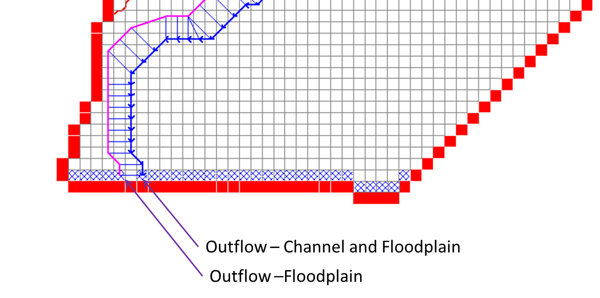Figure 61. Channel Outflow Configuration.
Hydraulic Structure
The second method is to use a hydraulic structure to discharge the flow from a channel element to a floodplain element (Figure 62). This method might result in some flood routing instabilities or errors because the channel area could be much larger than the grid element area. If the peak discharge to grid element area ratio (Qp/A) exceeds 10 cfs/ft2 (30 cms/m2), it might be better to use the third method.
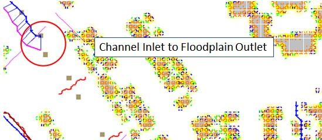Figure 62. Channel to Floodplain - Hydraulic Structure.
Channel Termination on Floodplain
The third method of channel termination is to end the channel on the floodplain without a channel outflow node. The FLO-2D model can exchange flow between the floodplain and either end of the channel either as upstream inflow or downstream channel terminus outflow. The flow exchange occurs between the floodplain elements and the channel internal elements. Both ends of the channel can exchange flow with the floodplain at the same time in either direction as inflow or outflow depending on water surface elevation. To facilitate the channel/floodplain exchange the floodplain elevations should reflect the channel thalweg elevation. At the downstream end, expanding the channel while lowering the banks helps to simulate sediment deposition and loss of channel conveyance capacity.
This represents the case where a channel may terminate into a detention basin or gradually transitions to unconfined flow on an alluvial fan. For these cases, the recommended approach is to gradually widen the channel (Figure 63) and reduce the channel depth over a several channel elements with a slight decrease in the flow area to the channel end.
To allow channel discharge exchange from the interior channel elements at the end of the channel to the floodplain, it is only necessary to stop the channel without an outflow element. The interior channel elements discharge directly to the downstream floodplain elements at the end of the channel.

Figure 63. Channel termination (channel elements are marked by a yellow line).
In Figure 3, the channel right bank element is 1011 and the left bank element is 1008 at the downstream end of the channel. Grid elements 1009 and 1010 are interior channel elements at the end of the channel. At runtime, the floodplain elevations for the interior channel elements are reset to the channel thalweg elevation. The channel flow is exchanged with the floodplain surface in these two interior channel elements based on water surface elevation and then the floodplain flow is shared with the downstream elements (grid elements 927 through 930) that are contiguous to the 1009 and 1010. Flow can also be exchanged between the channel and floodplain through the lower bank elements as the channel widens. Figure 4 and 5 show the flow moving across the floodplain downstream away from the channel.
Typically when a channel terminates on an alluvial fan, it becomes shallower and wider as the sediment deposition ensues with decreasing flow velocity. This may occur over a channel distance of several hundred or several thousand feet. To enable a realistic representation of the end of the channel, it is recommended to slightly decrease channel flow area in the downstream direction over the last 4 to 10 channel elements. In the example project depicted in the Figures, the channel decreases from a 6 ft. thalweg depth to a 2 ft. thalweg depth while increasing from a 240 ft. width to 820 ft. over the last five channel elements. The channel roughness may also increase with decreasing thalweg depth.

Figure 64. Combined maximum floodplain and channel flow depths.

Figure 65. Maximum floodplain velocities showing the flow downstream of the channel.
The guidelines for setting up a channel termination to the floodplain are:
Select a distance over which the channel will widen and become shallow (4 to 10 channel elements). The final channel cross section should have a thalweg less than 2.0 ft.
Maintain essentially the same channel cross section flow area (with maybe a slight reduction) over the last few channel elements.
Increase the n-values in the downstream direction.
The floodplain elevations of the channel interior elements are set to the channel thalweg elevation of the last channel element and are identical.
The downstream floodplain grid element elevations contiguous to the channel end elements should be lower than the channel end thalweg elevation to allow the flow to drain out of the channel.
The channel can only terminate in one of the four compass directions. The end of the channel cannot extend from bank to bank across of the diagonal directions. At least three channel bank extensions should be oriented in one of the four compass directions as shown in Figure 66. The incorrect set-up will not yield correct discharge results from the channel to the floodplain.

Figure 66. Channel Termination Bank Position.
Although it is not recommended, a uniform cross section can be used to the end of the channel as in the case of a rectangular concrete channel that just debouches onto the floodplain surface. If this was the project condition, it is suggested that the 1-D channel component be continued some distance downstream of the concrete section to allow the alluvial channel flow area to gradually decrease and become wider and shallower as would occur in the natural setting.
Floodplain overland flow into the channel
The floodplain elements contiguous to the channel interior should match the channel thalweg elevation. All the floodplain elements sharing discharge to the channel can be set to the same bed elevation near the channel thalweg. As the floodplain transitions to channel flow the n-values can decrease to match the channel roughness. Figure 67 displays the floodplain relationship for inflow to the channel. The blue elements represent floodplain flow depth that enters the channel shown by blue line (left bank elements) and magenta line (right bank elements). The levee elements with red lines are not required but are used to facilitate this test model. Figure 68 shows the complete floodplain and channel scenario with channel termination about half way through the grid system.

Figure 67. Floodplain flow entering the channel (from top of the image). Levees are shown in red.
The conventional method of assigning an inflow hydrograph to the upstream channel element in this case would not generate the same results with the flow only going down the channel. The inflow would leave the channel inflow element and flow upstream onto the floodplain. It is recommended that any inflow hydrographs be assigned to the upstream end of the floodplain grid system in this case.

Figure 68. The channel widens and the flow exits the channel back to the floodplain.